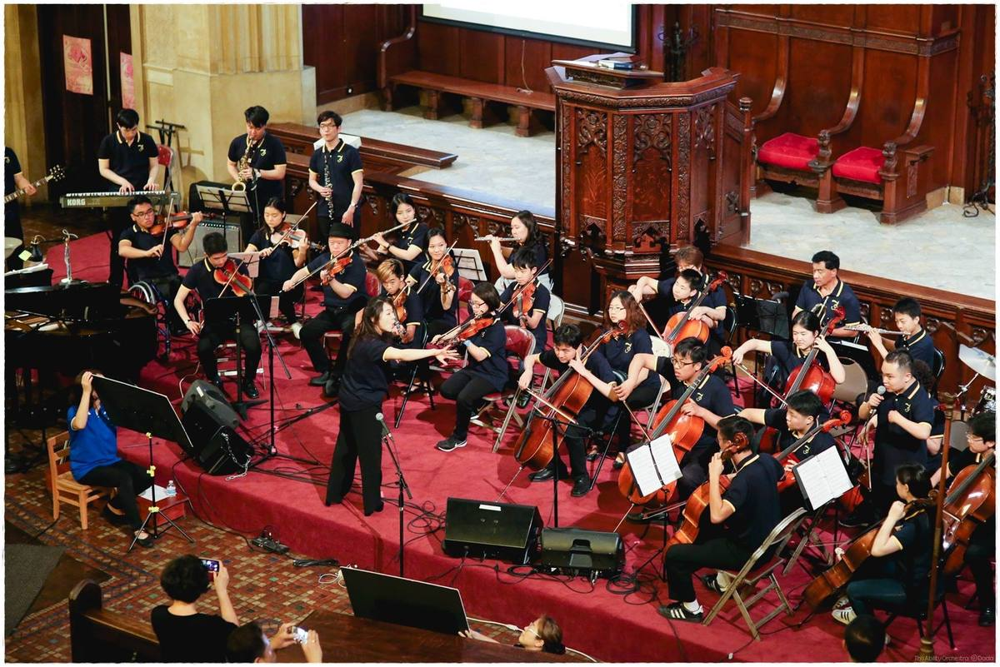
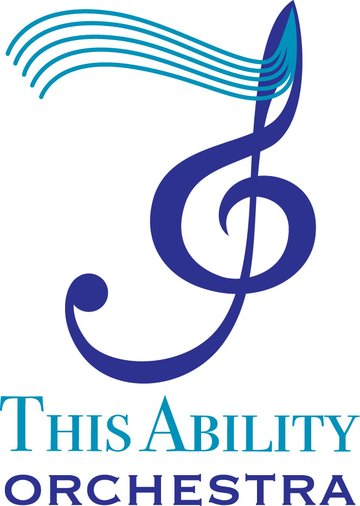
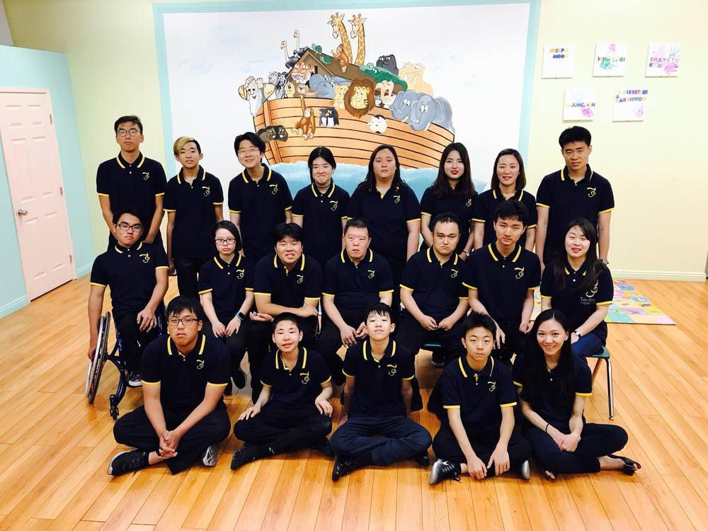
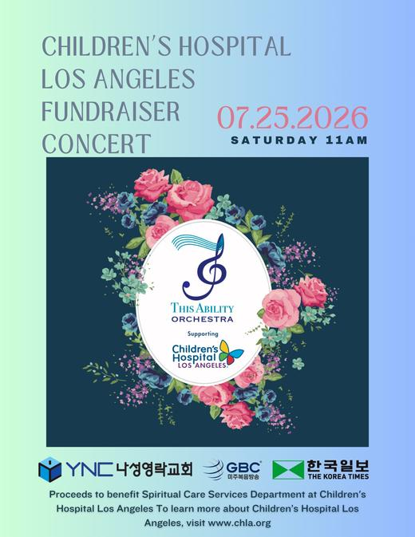
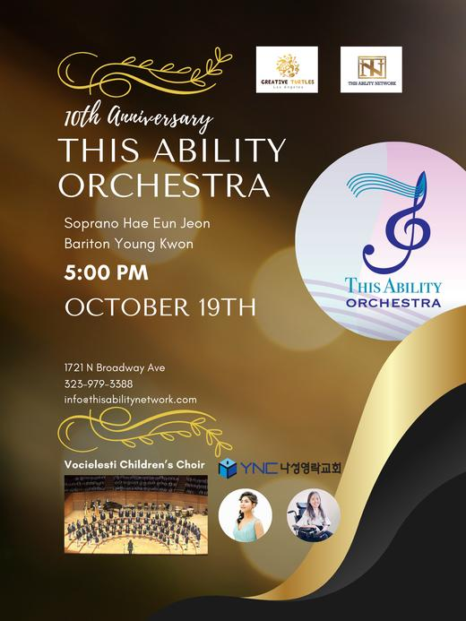
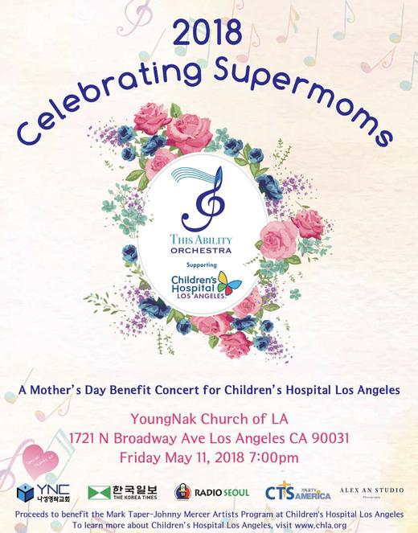
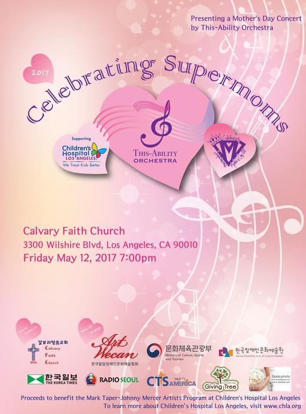
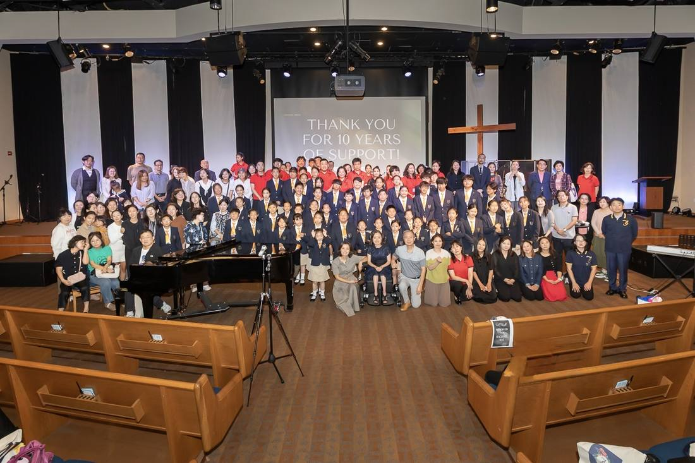
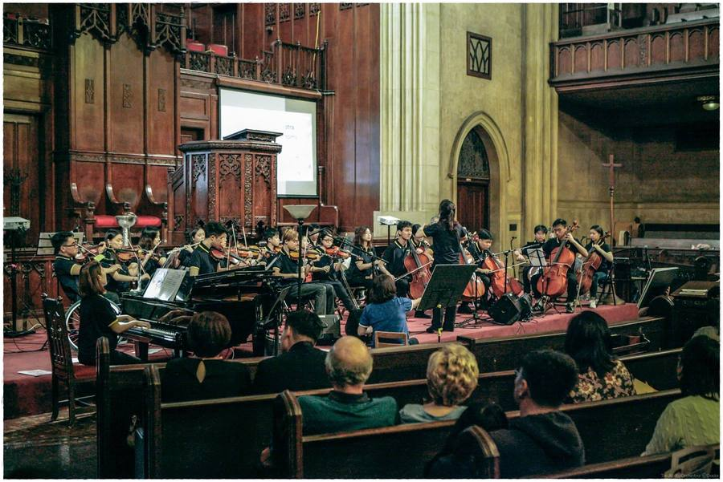

Music makes room for everyone. 음악은 모두를 위한 자리를 만듭니다.
This Ability Network is a Los Angeles nonprofit. Through This Ability Orchestra, it brings musicians of all abilities together to play, perform, and give back to the community. This Ability Network는 로스앤젤레스의 비영리단체입니다. This Ability Orchestra를 통해 모든 능력의 음악가들이 함께 연주하고 공연하며 지역사회에 나눔을 실천합니다.

About This Ability Network
This Ability Network is a 501(c)(3) nonprofit in Los Angeles. We believe that the stage, the rehearsal room, and the community all work better when everyone has a place in them.
Our work centers on This Ability Orchestra, which has been making music since 2014, and on the concerts and events that grow from it.

This Ability Network › Programs › This Ability Orchestra
This Ability Orchestra
We bring together musicians of all abilities in an inclusive, collaborative space. Through the universal language of music, each participant can express themselves, connect with others, and have their unique contributions celebrated.
We enhance connections to the world through music. We deepen understanding of inclusive environments.

Making music in Los Angeles since 2014
Our members play strings, winds, piano, and more, side by side. Rehearsals and concerts are built around what each musician can do and brings to the group.
Concerts that give back
Each year the Orchestra performs a fundraiser concert for Children’s Hospital Los Angeles, alongside other performances through the year.
-

July 25, 2026, 11 a.m.
2026 CHLA Fundraiser Concert
Proceeds supported the Spiritual Care Services Department at Children’s Hospital Los Angeles. Supporters could take home a CHLA eco bag for $20.
-

October 19, 5 p.m.
10th Anniversary Concert
A celebration of ten years, with soprano Hae Eun Jeon, baritone Young Kwon, and the Vocielesti Children’s Choir.
-

May 11, 2018, 7 p.m.
Celebrating Supermoms
A Mother’s Day benefit concert for Children’s Hospital Los Angeles at YoungNak Church of LA. Proceeds supported the Mark Taper–Johnny Mercer Artists Program.
-

May 12, 2017, 7 p.m.
Celebrating Supermoms
Presented at Calvary Faith Church in support of Children’s Hospital Los Angeles and its Mark Taper–Johnny Mercer Artists Program.


2027 International Event for Musicians with Developmental Disabilities
We are planning and promoting an international event in 2027 that brings musicians with developmental disabilities together to learn and perform.
- Master classes, including private and group lessons
- Community events alongside, which we are exploring
Dates, location, and registration are still being planned. Write to us to get updates first.
Get event updatesContact and support
To join, volunteer, partner, or give, reach out. We would love to hear from you.
- info@thisabilitynetwork.com
- Phone
- 323-979-3388
- Address
- 1721 N Broadway Ave, Los Angeles
- Nonprofit
- This Ability Network, 501(c)(3), EIN 93-1977627